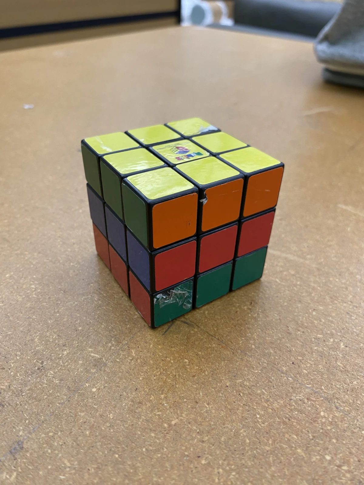
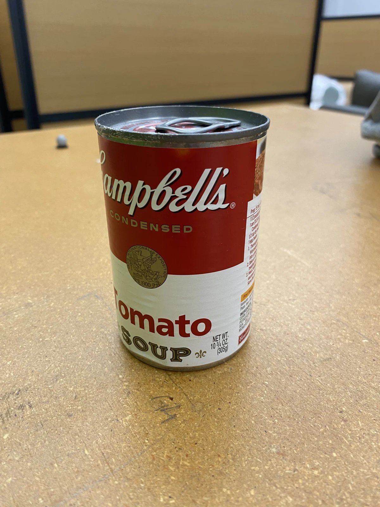
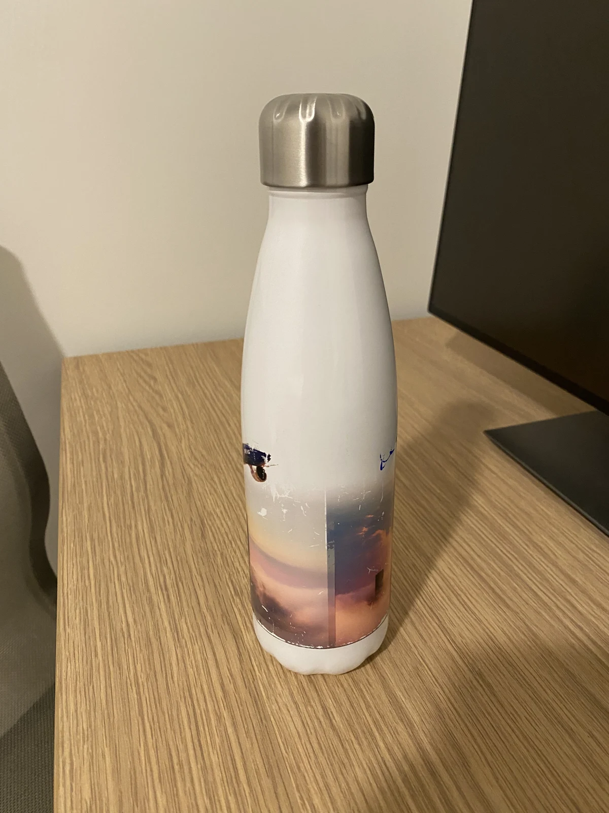
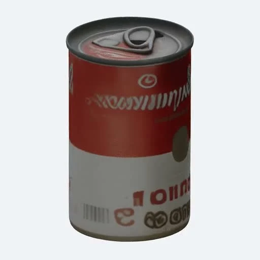

THE IDEA
Your space. Your objects.
A policy that learns both.
A generalist robot policy has seen a lot of the world. It still needs to learn your world.
Splat2Act turns a phone scan and object images into a photorealistic digital twin, generates successful pickup demonstrations, and personalizes a vision-language-action policy for the captured environment. All training demonstrations come from simulation.
Human input ends at scene and object capture.
Read the abstract
A user who brings a generalist manipulation policy into their home or office wants it to pick up their objects from their shelves, counters, and tables. Yet even a strong generalist like π0.5 achieves 0% pickup success in our captured deployment scenes without adaptation, and collecting real demonstrations in every user's environment is prohibitively expensive. We present Splat2Act, an automated real-to-sim-to-real pipeline that personalizes a pretrained vision-language-action (VLA) policy to a specific scene and object set using only a handheld phone scan and images of the user's objects. Unlike prior real-to-sim work that reconstructs individual tabletops, Splat2Act operates on building-scale indoor environments: it builds a photorealistic digital twin with 3D Gaussian Splatting and collision geometry, automatically discovers tabletop and non-tabletop receptacles, constructs feasible pickup tasks, and generates successful demonstrations with a privileged simulation oracle, with only scene and object capture required from a human. Applied to 101 scanned campus environments with a median navigable area of 104.87 m² and 7 receptacles, the pipeline yields 852 receptacles and over 68,000 pickup demonstrations. We fine-tune π0.5 in two stages: Stage 1 adapts to hundreds of public object assets, drawn either from the deployment scene alone or from all 101 scenes; Stage 2 personalizes to the user's own objects on the deployment scene's receptacles. Our strongest personalized policy reaches 62.5% aggregate pickup success in the target scene. Deployed on a real Stretch 3, the same policy achieves 63.9% success on a 12-task subset, closely tracking its 66.7% simulated success on those tasks. We find that Splat2Act is able to adapt to the target scene and objects from only simulation oracle data, suggesting an alternative way for personalizing VLA manipulation training using an automated real-to-sim-to-real approach.
THE REAL-TO-SIM-TO-REAL PIPELINE
Capture once.
Let simulation do the work.
From reconstruction to demonstrations to adaptation,
one continuous pipeline connects the captured world to robot action.
01 CAPTURE & RECONSTRUCTION
A familiar space,
made simulation-ready.
A 20–30 minute handheld RGB-D scan captures a building-scale environment. Gaussian splats preserve its appearance; an extracted mesh provides the geometry for collision and task planning.
DN-Splatter reconstruction · SuGaR mesh extraction
Your objects, reconstructed.
One photo and measured dimensions become a movable 3D asset.



Example assets from the seven-object inventory. Policy personalization is evaluated on pill bottle, Spam, and tomato soup targets.
02 AUTOMATED TASK GENERATION
A building becomes
a training ground.
The pipeline discovers usable surfaces throughout the scene, including non-tabletop receptacles, and constructs feasible pickup tasks.
- 01
Find the navigable space
Build a navigation mesh around the robot’s geometry.
- 02
Discover support surfaces
Cluster upward-facing geometry into stable, reachable receptacles.
- 03
Assemble feasible tasks
Sample object placements, robot poses, and distractors; filter for reachability.
- 04
Generate successful demonstrations
A privileged geometric oracle plans, executes, and retries pickup attempts.
03 DATA AT SCALE
Thousands of demonstrations.
No teleoperation.
Across 101 campus environments, Splat2Act generates 68,021 successful pickup trajectories over 852 automatically discovered receptacles.
of recorded control data
from automated simulation
Lounges, kitchens, libraries, offices, and more.
Median navigable area: 104.87 m² per scene.
04 TWO-STAGE POLICY ADAPTATION
Learn the task.
Then learn your world.
We fine-tune π0.5 in two stages: first with diverse public objects, then with captured user objects on the deployment scene’s receptacles.
Broad adaptation provides experience with the task and embodiment. Personalization grounds that experience in the scene and object inventory that matter at deployment.
Broad adaptation
1,024 demonstrations
Hundreds of public objects
Personalization
500–504 demonstrations
Captured objects + target scene

Your object inventoryYour scene’s receptacles
robot policy
ON THE REAL ROBOT
Learn in simulation.
Act in the real world.
Simulation-trained policies run on Hello Robot Stretch 3,
using head and wrist RGB, proprioception, and a language prompt.
CLOSING THE LOOP
The same world,
on both sides.
Gaussian-splat observations preserve the visual character of the deployment scene. The personalized policy transfers from this reconstructed environment to the physical robot.
Office1k + Office personalization
Same 12-task subset · 12 simulated episodes · 36 real attempts
Before adaptation: the pretrained policy
Broad pretraining is a starting point.
The pretrained π0.5 policy scores 0% in both captured task banks, without prior exposure to the Stretch embodiment or this action space. Splat2Act supplies simulation experience for adaptation and scene-specific personalization.
WHAT THE EXPERIMENTS SHOW
Personalization matters.
So does where you learn.
Explore the effects of broad adaptation, scene alignment,
and the gap between simulation and deployment.
Pickup success in Office
40 configurations · easy + hard
A better starting point for personalization.
On Office, broad adaptation in the deployment scene followed by personalization reaches 62.5% success — 17.5 percentage points above direct personalization from the pretrained model.
The strongest adaptation source depends on the deployment scene.
View the original paper figures
Personalization is local.
These experiments study receptacle-local pickup. Success drops substantially on unseen lab tables, reinforcing the value of adapting to the actual deployment scene. Longer-horizon mobile manipulation remains a direction for future work.
THE PAPER
From captured scenes
to personalized action.
Splat2Act: From Captured Scenes to
Personalized VLA Manipulation
Dataset release is planned upon acceptance.
@misc{ye2026splat2act,
title = {Splat2Act: From Captured Scenes to
Personalized VLA Manipulation},
author = {Ye, Xiaomeng and Jaganathan, Krishna
and Lim, Gyubeum and Chhablani, Gunjan
and Irshad, Muhammad Zubair and Kira, Zsolt},
year = {2026}
}Download .bib